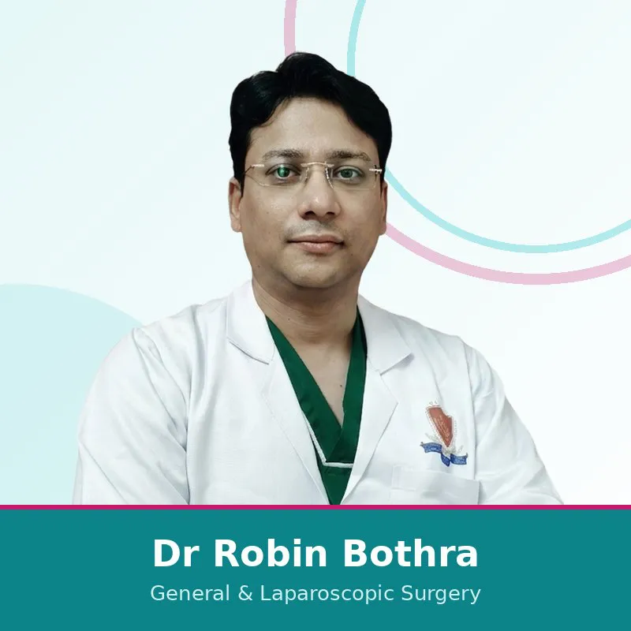
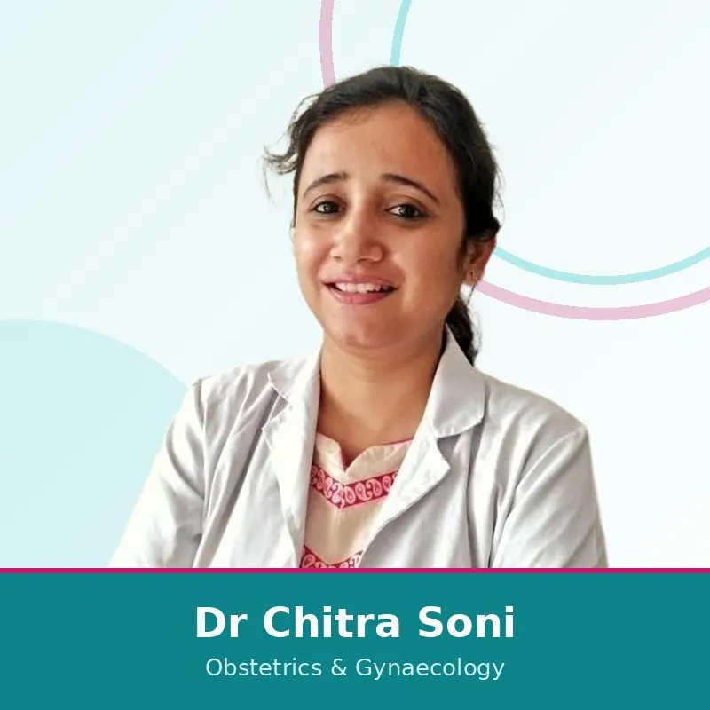
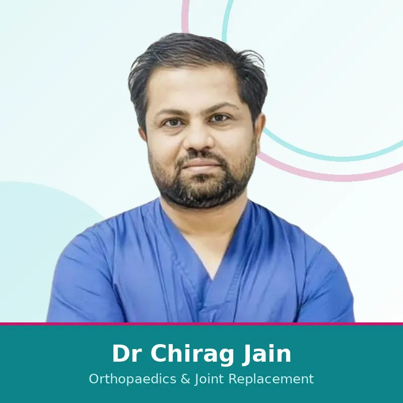
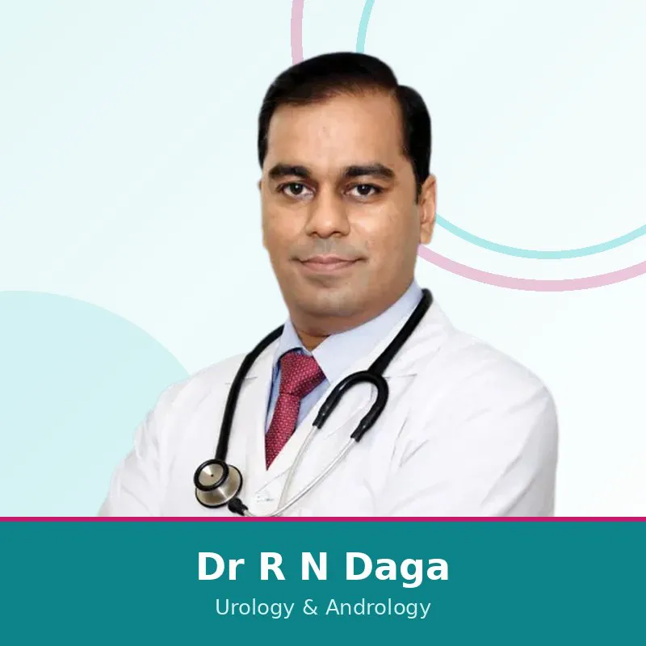
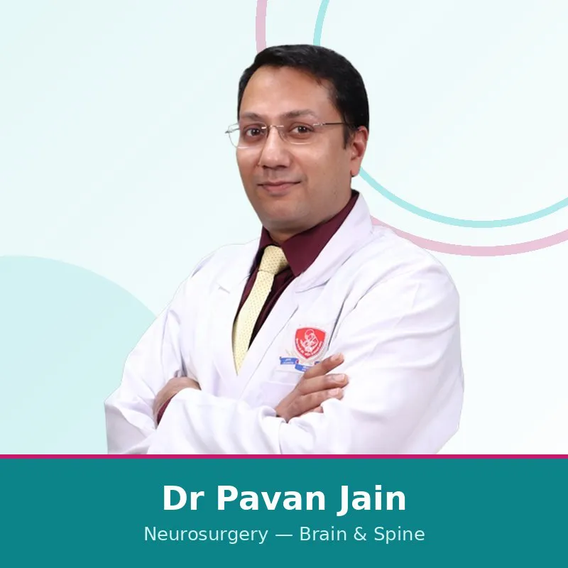
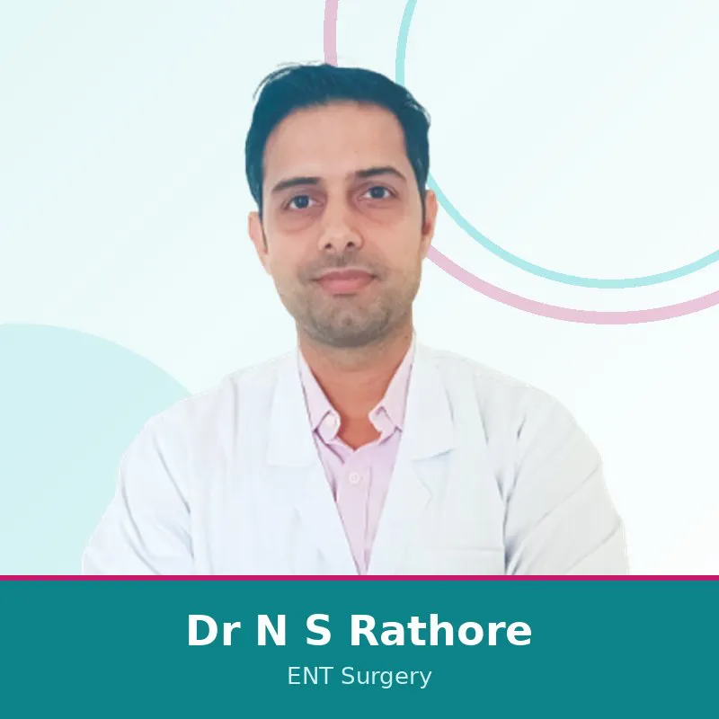
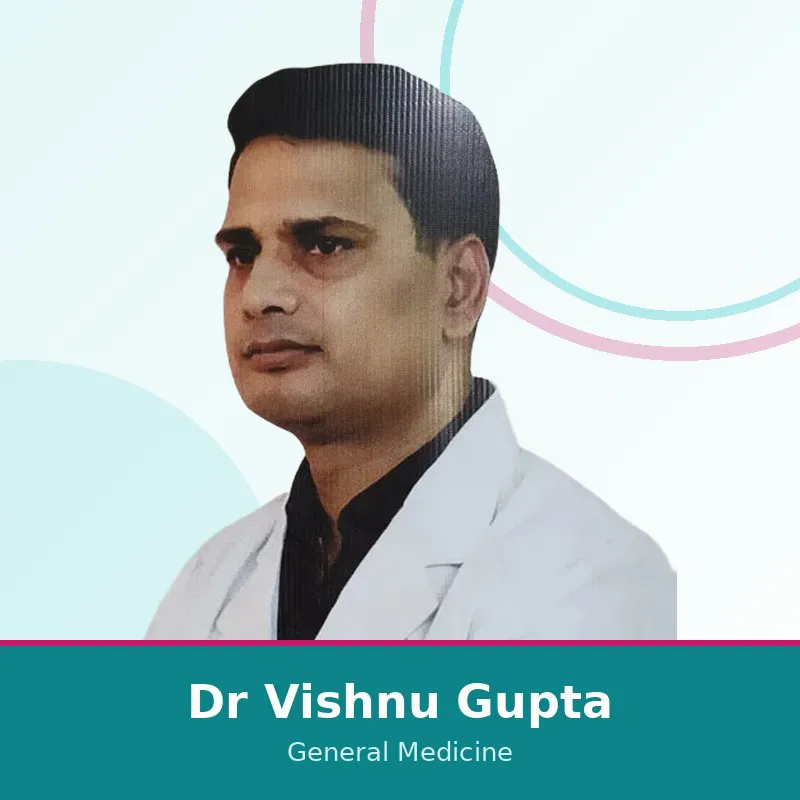
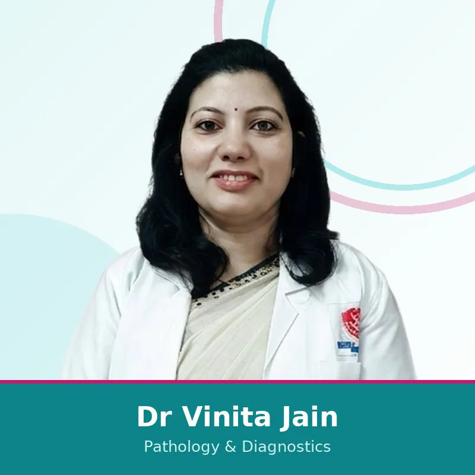

सर्जरी, महिला स्वास्थ्य, दर्द एवं रीढ़, हड्डी रोग, यूरोलॉजी, न्यूरोसर्जरी, ENT, जनरल मेडिसिन और पैथोलॉजी में नौ अनुभवी कंसल्टेंट, एक ही छत के नीचे। किसी भी डॉक्टर पर "व्हाट्सएप पर बुक करें" दबाकर एक टैप में अपॉइंटमेंट का अनुरोध भेजें।

डॉ. रॉबिन बोथरा कई दूरबीन और लेज़र प्रक्रियाएँ करते हैं: पित्ताशय की पथरी, हर्निया और अपेंडिक्स सर्जरी, बवासीर-फिशर-फिस्टुला का लेज़र उपचार, स्तन और थायरॉइड सर्जरी, कैंसर सर्जरी और डायबिटिक फुट देखभाल। मरीज़ इनकी सर्जरी को आसान और जल्दी रिकवरी वाला बताते हैं।

डॉ. चित्रा सोनी महिलाओं की हर अवस्था में देखभाल करती हैं: सामान्य एवं दर्द रहित प्रसव, सिज़ेरियन, हाई-रिस्क प्रेगनेंसी, लेप्रोस्कोपिक स्त्री रोग सर्जरी, हिस्टेरोस्कोपी, निःसंतानता उपचार और लेज़र कॉस्मेटिक गायनेकोलॉजी। वे ध्यान से सुनने और स्पष्ट समझाने के लिए जानी जाती हैं।

डॉ. चिराग जैन घुटने, कूल्हे और कंधे के जोड़ प्रत्यारोपण, आर्थ्रोस्कोपी (दूरबीन जोड़ सर्जरी) और फ्रैक्चर एवं ट्रॉमा देखभाल पर केंद्रित हैं, आधुनिक इम्प्लांट और न्यूनतम चीरा तकनीकों का उपयोग करते हुए। मरीज़ इन्हें देखभाल करने वाला और स्पष्ट बताते हैं।

डॉ. राम नरेश डागा न्यूनतम चीरा और लेज़र यूरोलॉजी सर्जरी में विशेषज्ञ हैं, जिसमें किडनी स्टोन, प्रोस्टेट और मूत्र संबंधी कैंसर (URS, PCNL, TURP, TURBT) का इलाज शामिल है। वे एक हज़ार से अधिक ऐसे मामलों का इलाज कर चुके हैं और सबसे कम चीरे वाला विकल्प चुनने का ध्यान रखते हैं।

डॉ. पवन जैन मस्तिष्क ट्यूमर, जटिल और न्यूनतम चीरा रीढ़ की सर्जरी, स्कोलियोसिस, रीढ़ के ट्यूमर, चोट से फ्रैक्चर और डिजेनरेटिव स्पाइन रोग का इलाज करते हैं। वे न्यूनतम चीरा, गति-संरक्षण तकनीकों को प्राथमिकता देते हैं और सर्जरी को अंतिम विकल्प मानते हैं।

डॉ. नटवर सिंह राठौड़ बच्चों और बड़ों के कान, नाक और गले की सभी समस्याओं का इलाज करते हैं, संक्रमण, सुनने और साइनस की समस्याओं से लेकर ENT सर्जरी तक। वे अंग्रेज़ी, हिंदी और जयपुरी में परामर्श देते हैं।

डॉ. विष्णु गुप्ता रोज़मर्रा की और पुरानी बीमारियों में बड़ों की देखभाल करते हैं, जिसमें डायबिटीज़, थायरॉइड, रक्तचाप, श्वसन और पेट की समस्याएँ, माइग्रेन और मौसमी बीमारियाँ शामिल हैं। मरीज़ इनकी सावधानीपूर्वक जाँच और व्यक्तिगत उपचार की सराहना करते हैं।

डॉ. विनीता जैन हॉस्पिटल की डायग्नोस्टिक लैब का नेतृत्व करती हैं। उनका काम हर विभाग में सटीक निदान का आधार है, सामान्य रक्त जाँच और हेल्थ चेक से लेकर हिस्टोपैथोलॉजी और विशेष जाँचों तक, भरोसेमंद और समय पर इन-हाउस रिपोर्टिंग के साथ।